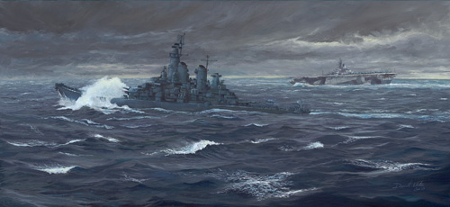
USS New Jersey, with her camouflage Measure 21 (Navy Blue overall with dark blue decks) and USS Hancock as part of Task Force 38 sailing off the Philippines on Nov 8, 1944, During Typhoon Cobra or Halsey's Typhoon.
Typhoon Cobra, also known as the Typhoon of 1944 or Halsey's Typhoon (named after Admiral William Halsey Jr.), was the United States Navy designation for a powerful tropical cyclone that struck the United States Pacific Fleet in December 1944, during World War II. The storm sank three destroyers, killed 790 sailors, damaged 9 other warships, and swept dozens of aircraft overboard off their aircraft carriers.
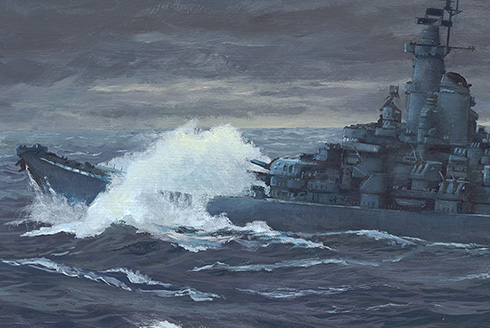
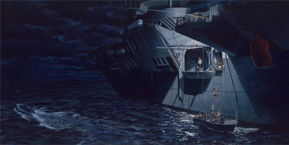
A group of 99 South Vietnamese refugees is assisted aboard HMAS MELBOURNE by Royal Australian Navy sailors.
Boats from HMAS MELBOURNE (R21) and HMAS TORRENS (DE53) ferry refugees from the stricken NGHIA HUNG adrift in the South China Sea, 21 June 1981. This group of men, women, children and infants was officially designated as MG99.
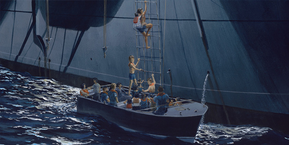
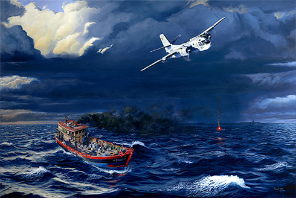
RAN Tracker 851 over the NGHIA HUNG adrift in the South China Sea, 21 June 1981.
All 99 South Vietnamese refugees on board the stricken vessel were safely rescued by HMAS MELBOURNE (R21) and HMAS TORRENS (DE53) later that night.
This group of men, women, children and infants were officially designated as MG99.
It was a very moving ceremony at the 40th anniversary of the MG99 rescue. It was also a chance to reunite Vietnamese refugees and the Royal Australian Navy officers and sailors who rescued them.
It was an honour to be there, and an emotional time for all to hear the stories from the refugees and the sailors who were there.
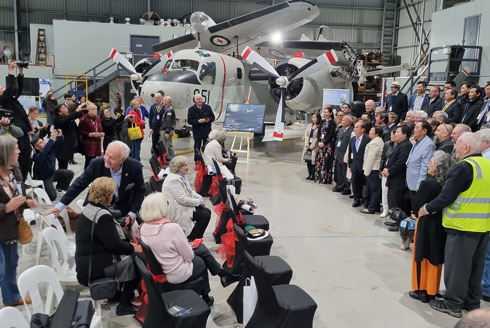
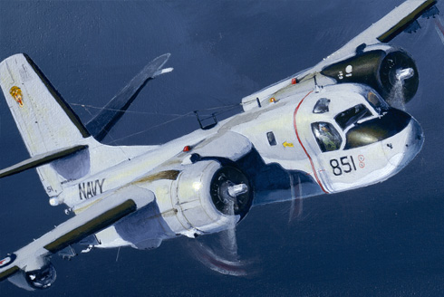
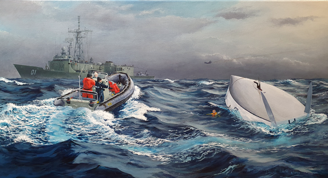
'The life line' depicts the moment Tony Bullimore is sighted, emerging from his upturned yacht in the Southern Ocean, January 1997.
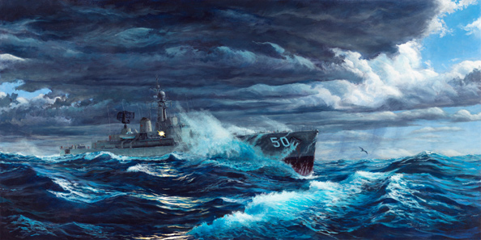
This is a personal piece that was entered in the Australian Society of Marine Artists' 20th Anniversary Exhibition in Sydney, 14 October 2016.
One of my favourite memories from serving in the Royal Australian Navy is a time on HMAS Swan. We were in the Southern Ocean, in company with HMAS Torrens, and it was a very rough day!
read more...I was on watch and there wasn't much to do until the Officer of the Watch handed me a signal to send to Torrens. I was about to reach for the voice radio, then thought “no, that's too easy”. I went out onto the bridge wing, fired up the 10-inch light and called up Torrens.
The signalman on Torrens must have been very unhappy, being called out of a nice warm bridge. As I was sending the signal, I could feel the ship rise over the crest of a wave and I knew we were about to 'dig' into the next one.
As the ship did, a mass of water burst into the air and I remember a wall of spray passing over me as I sent the signal. I often wondered what the view would have been like from Torrens. This painting is an attempt to visualise that moment.
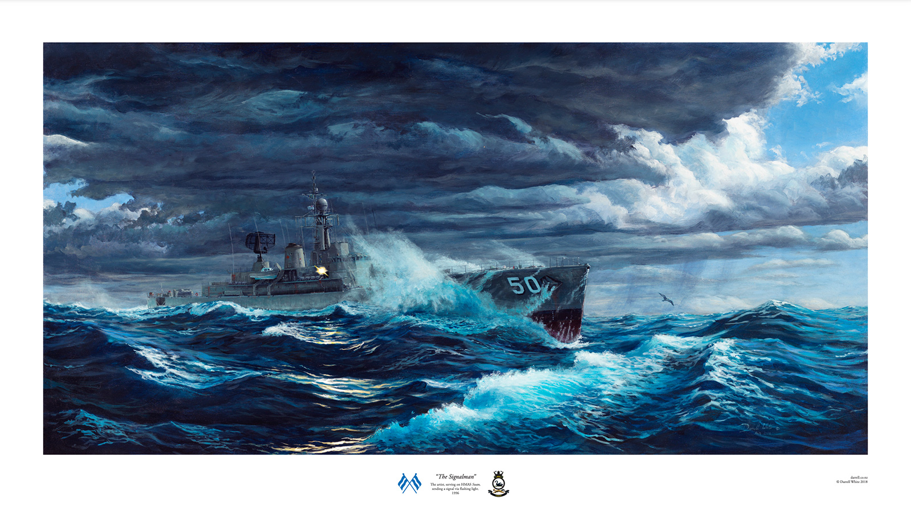
Dimensions: Image is 65cm X 32.5cm plus border and title area.
Details: 225gsm Watercolour paper, the title is accompanied with 'crossed Juliets' (Signalman's rate badge) and HMAS Swan crest.
For purchases and payment options, please contact the artist.
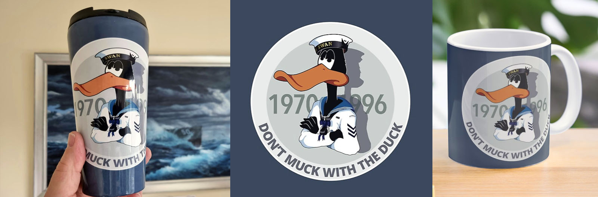
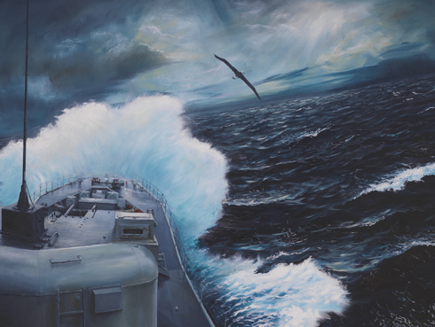
As the Destroyer Escort crashes through southern seas, a solitary albatross glides on the winds that whip up the white caps and chill the sailors keeping watch on the upper deck. Albatrosses spend most of their life soaring above the seas, with the sighting of an albatross by sailors considered a good omen.
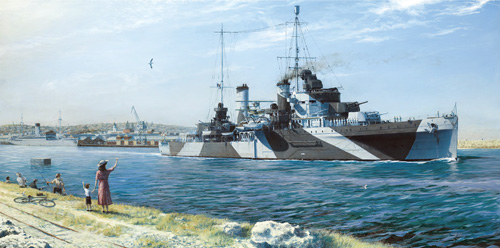
HMAS Sydney II departs Fremantle inner harbour.
It is a serene scene looking over Fremantle from North Mole. Wharfies taking time out to fish are joined by a woman and child to watch the sleek lines of HMAS Sydney slip by, her crew lining the decks.
At a dedication ceremony at the WACA, the painting was unveiled 11 November 2011 to coincide with the day, 70 years ago, Sydney departed from Fremantle.
read more...It's a clear November morning and Sydney has left H wharf and is sailing out to a buoy in the outer harbour. She leaves behind Fremantle port as it begins to buzz with its daily activity.
MS Charon, berthed alongside B shed, takes on stores as the smoke from a steam train at Fremantle Station drifts over the neighbouring buildings. In the distance, the memorial on Monument Hill catches the morning light as it watches over the town of Fremantle as it prepares for the commemoration of Armistice Day, 11 November 1941.
The painting was commissioned by the West Australian Cricket Association (WACA) to form part of their HMAS Sydney II Commemorative Display.
My intention was to create a piece that conveys an emotional sense of what was happening the day Sydney sailed, as historically accurate as possible.
With our knowledge of the events that were about to unfold, the juxtaposition of Sydney and a typical day in Fremantle creates tension in the viewer. We can also admire the ship and her company for the courage and inspiration they gave to the Australian people in the early war years, becoming a symbol of strength in an increasingly turbulent time.
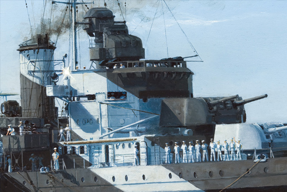
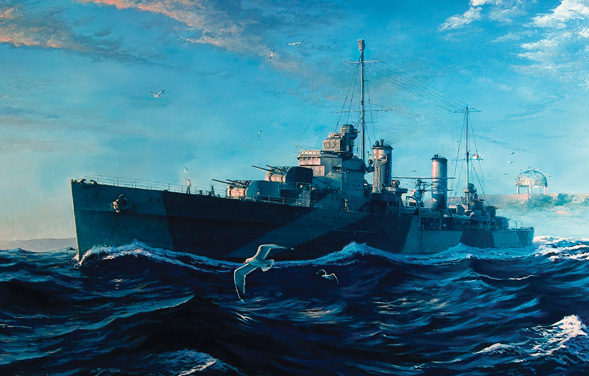
HMAS Sydney II sails towards the sunset as the gulls from the Dome of Souls come to life and escort the light cruiser on her last voyage.
Created for TS Morrow, Geraldton Navy Cadets, to commemorate the finding of the Sydney II and the Kormoran. The original was raffled to raise funds for the Cadets.
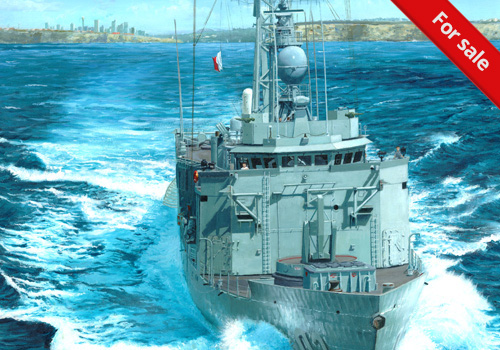
HMAS Sydney FFG 03
Specials have fallen out, watches have closed up and it's down to business. Flag Hotel is brought to the dip in preparation for helicopter operations as HMAS Sydney steams away from the city of her namesake.
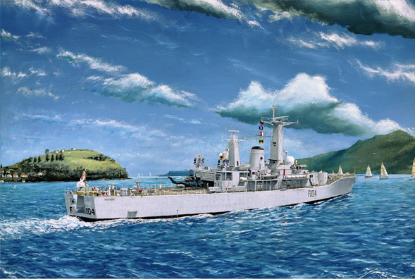
HMNZS Southland F104 heads out of Waitematā Harbour. Rangitoto is visible in the background as Southland passes North Head.
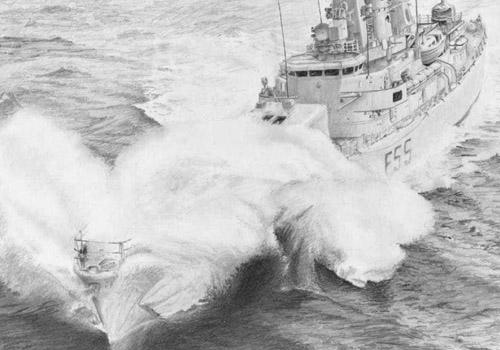
HMNZS Waikato F55
Created to commemorate the decommissioning of HMNZS Waikato, the original was given to my father who was commissioning crew. My brother and I were also christened onboard her in the 1970's. So this ship holds a special place in our family's heart.
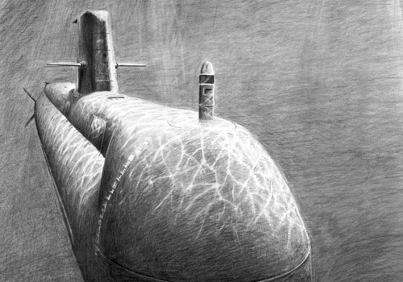
Collins class submarine escorted by two dolphins, inspiration from the submariners insignia.
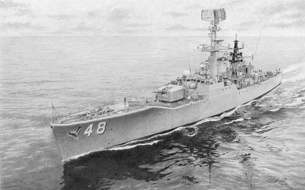
HMAS Stuart D48 cruising "up top".
One of my 19 or so pencil works depicting Royal Australian Navy ships or World War II bombers.
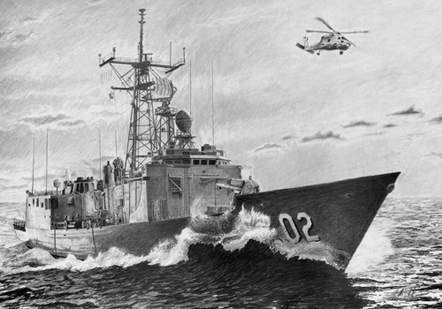
HMAS Canberra FFG 02 at speed.
I spent a couple of days on her back in the mid 90's. I cross-decked (a temporary transfer) to her from HMAS Westralia and sailed the leg from Thailand to Singapore. It was a fantastic experience, especially the high speed breakaway after the replenishment at sea (RAS) from Westralia.
This is the second ship drawing I've ever created, following Homeward Bound. It's a piece I'm truly proud of and one of the rare ones I genuinely enjoyed working on—not just completing!
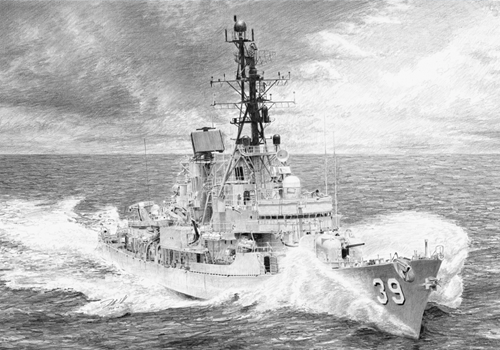
HMAS Hobart DDG 39 at speed.
The title comes from her nick-name, earned during the Vietnam War. One of my 19 or so pencil works depicting Royal Australian Navy ships.
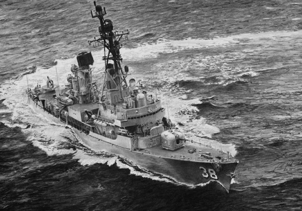
HMAS Perth DDG 38.
I sent a print to the Captain of HMAS Perth when it was completed and was very surprised to get an invite to join her on her entry into the port of Fremantle on her decommissioning voyage. I climbed aboard with journalists but the notice of my presence may not have got to the welcoming officer. So I suggested I go up to the flag deck and keep the Signalmen company. I was good to see some old faces from my navy days there and enjoyed the spectacle.
The following day I was allowed to set up a stand to showcase my artwork during their open day.
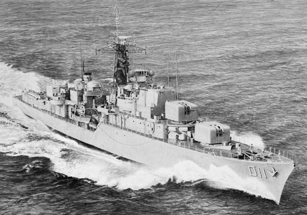
HMAS Vampire D11.
HMAS Vampire with her original open bridge sails at speed through a calm sea. She is now a museum ship at the Australian National Maritime Museum in Darling Harbour, Sydney. Last time I visited her, she had a framed print of my drawing in the Wardroom.
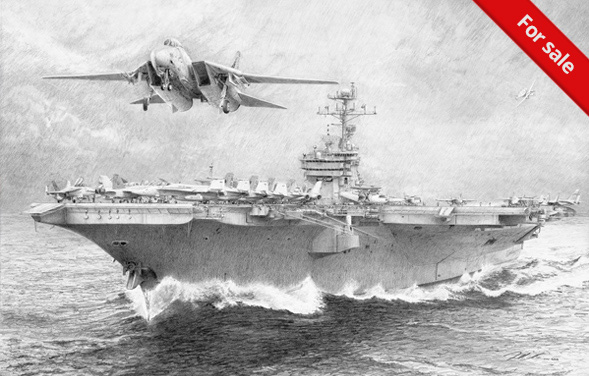
USS John F. Kennedy CVN 79.
During Gulf operations, a Grumman F-14 Tomcat of the Pukin' Dogs squadron is catapulted from her deck.
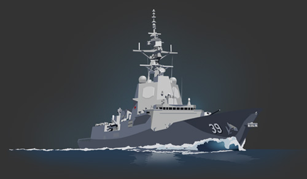
Digital artwork of HMAS Hobart III adorning multiple items.